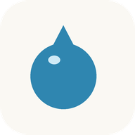

Löser det sig i vatten?

Löser det sig? Leder det ström? Surt eller basiskt?
Gratis · ingen inloggning · skolappar.com
Kemi, åk 4–6, centralt innehåll: ”Indelning av ämnen och material utifrån egenskaperna löslighet, ledningsförmåga, surt eller basiskt.” och ”Vattnets egenskaper och kretslopp.”
Varje fråga visar ett prov: ett glas vatten (löser det sig?), en sluten krets med batteri och lampa (leder det ström?) eller ett pH-papper (surt eller basiskt?). Barnet trycker på den låda som passar. Rätt svar ger en faktarad som skrivs och läses upp, till exempel att saltvatten leder ström men rent vatten nästan inte alls, och att blyertspetsen av grafit leder ström. Nivå 4 blandar proven, så att barnet måste läsa provet i stället för lådorna. Ingenting smakas eller blandas i appen – den visar bara resultaten av skolans vanliga försök. Källa: Skolverket, läroplanen för grundskolan (Lgr22), kemi åk 4–6.